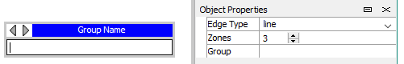
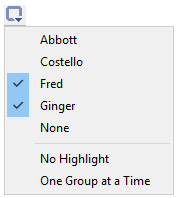

分组
挤出集合中的主要对象——点、边、块体——可以分组。已分组的挤出对象可在控制台命令行以及使用 FISH 时进行操作。由它们衍生出的模型对象（网格单元、面、网格点）将继承分组赋值，这些分组随后可在命令行进一步修改模型时（挤出后）以及模型可视化时（创建模型绘图）使用。
对象分组
要创建分组，请选择所需对象。选中后，可通过在弹出属性编辑器或控制面板中输入分组名，将这些对象添加到分组。两者如下所示（此处以选中的边为例）。


挤出器的用户界面一次只允许将对象分配给一个分组。可在控制台窗格中输入命令，以使用不同槽位分配更多分组。
要向同一分组添加更多对象，只需选中它们，并在弹出属性编辑器或对象属性控件组中输入相同的分组名。
取消对象分组
要移除分组赋值，请先选择所需对象，然后打开弹出属性编辑器或使用对象属性控件组。从编辑字段中删除分组名即可将这些对象从该分组中移除。
只有当一个分组的所有成员都被取消分组时，该分组才被完全移除；否则，只要至少有一个成员对象未被移出该分组，分组就会保留。
使用高亮分组工具
工具栏上的高亮分组工具（ ）可用于在挤出集合的当前显示中高亮一个或多个分组。模型中可用的每个分组都列在高亮分组工具按钮展开的下拉菜单中。要高亮某个分组，只需从列表中选择它。选择标有“无”的项将使所有未分配分组的对象被高亮显示。
）可用于在挤出集合的当前显示中高亮一个或多个分组。模型中可用的每个分组都列在高亮分组工具按钮展开的下拉菜单中。要高亮某个分组，只需从列表中选择它。选择标有“无”的项将使所有未分配分组的对象被高亮显示。
在分组列表下方，“无高亮”命令将关闭视图中所有对象的分组高亮。
勾选“一次一个分组”项时，该工具一次只能高亮一个分组。取消勾选时，可同时高亮多个分组。如果当前高亮了多个分组，则开启（勾选）“一次一个分组”选项将移除所有活动分组的高亮。所有分组均以同一种颜色（绿色）高亮，因此没有视觉标识来区分不同的高亮分组。


| 这些内容对您有帮助吗？… 版权与免责声明 | FLAC3D © 2019, Itasca | 原文更新于 2020 年 10 月 8 日 |